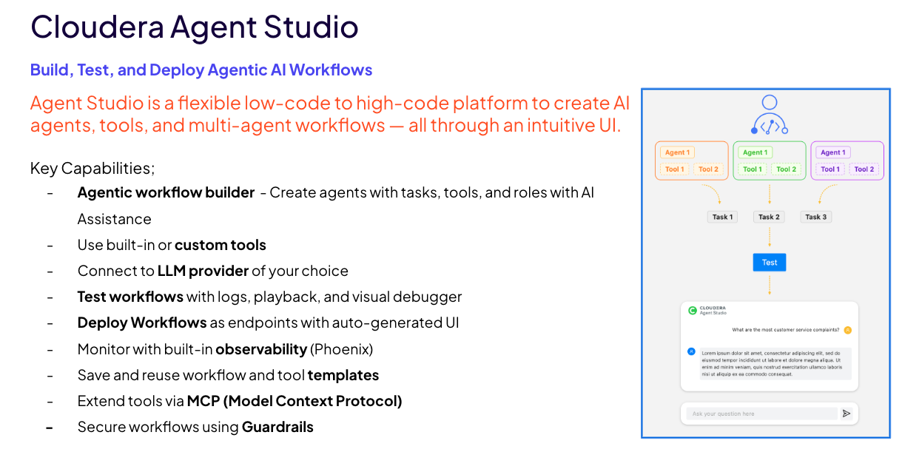
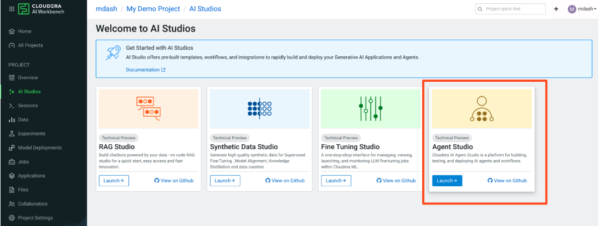
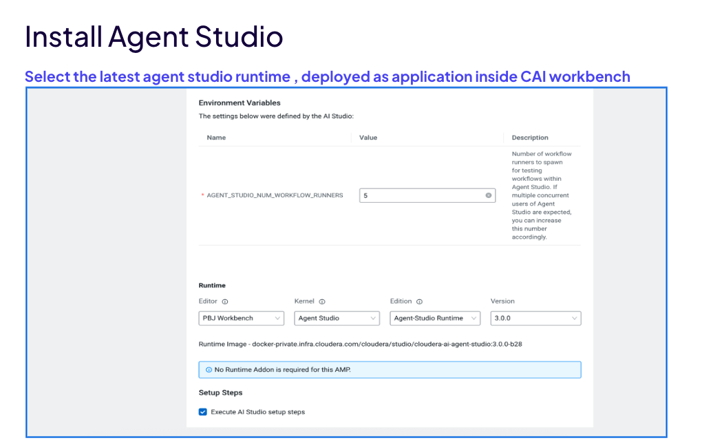
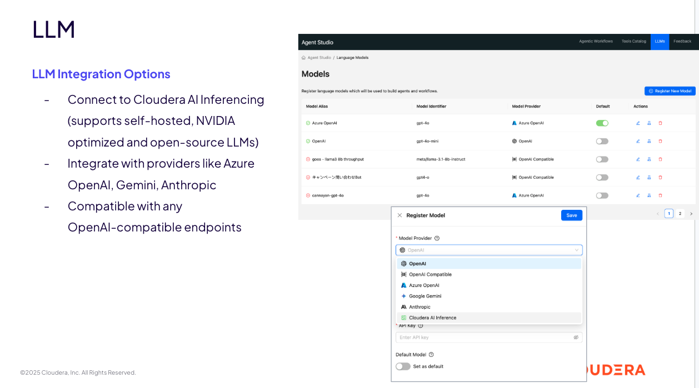

Agent Studio¶
Cloudera AI Agent Studio is a flexible low-code to high-code platform for building, testing, and deploying agentic AI workflows — all through an intuitive UI. It wraps the CrewAI engine behind a guided workflow builder so you can create multi-agent pipelines, register tools and MCP servers, and deploy as production endpoints without writing framework code.

Key Capabilities¶
| Capability | Description |
|---|---|
| Agentic workflow builder | Create agents with tasks, tools, and roles — with AI assistance |
| Built-in and custom tools | Use pre-built tools or build your own in Python |
| LLM provider flexibility | Connect to Cloudera AI Inferencing, Azure OpenAI, Gemini, Anthropic, or any OpenAI-compatible endpoint |
| Test panel | Run workflows with test inputs; visualize execution with interactive flow diagrams, real-time logs, and playback mode |
| Workflow deployment | Deploy tested workflows as long-running model endpoints with auto-generated UI |
| Observability | Built-in monitoring via Phoenix — trace every agent, tool, and LLM call |
| Templates | Save and reuse workflow and tool templates across projects |
| MCP (Model Context Protocol) | Extend agents with plug-and-play external tools without custom connectors |
| Guardrails | Secure workflows with input safety and policy validation |
What is an Agent?¶
An agent is a system that can reason and plan, use tools, and carry out multi-step tasks with little human help. In Agent Studio, each agent is an LLM paired with a role, backstory, goal, and a set of tools. The LLM converts natural language instructions into a sequence of steps, and the tools execute those steps against external systems.
User ◄──────────► Agent ◄──────────► LLM
"Book me a Converts NL to
flight to Hawaii" steps required
│
▼
Tools
(API calls, DB queries,
file operations, etc.)
Environment Setup: Project, Session & Studio¶
Agent Studio runs inside a Cloudera AI (CAI) project as a CAI Application. Before you can build a workflow you need a project, a runtime, and the Agent Studio application launched. In an instructor-led bootcamp these components are pre-provisioned — for your own demo (e.g. Claim Processing) you create and configure them yourself, in the order below.
1. Create a CAI project¶
- Open Cloudera AI Workbench and click New Project.
- Give the project a name (e.g.
Claim Processing Demo), select a Python 3.10 runtime, and click Create Project.
2. Project settings¶
Configure the project under Project Settings:
| Setting | Where | Notes |
|---|---|---|
| Runtime | Project Settings → Runtime | Python 3.10 is the tested runtime for Agent Studio and its tools |
| Environment variables | Project Settings → Advanced → Environment Variables | Project-wide config/secrets available to every session, job, and application in the project |
RUNTIME_IDENTIFIER |
Project-level env var | Set this if a script or job cannot auto-discover a Python 3.10 runtime |
3. Start a Session¶
A Session is your interactive workbench for uploading files, editing tool code, and running setup scripts:
- Go to Sessions → New Session, select the JupyterLab editor, and start it.
- Open a terminal inside the session to run commands and inspect environment values.
-
Retrieve your project ID (required by some deployment scripts):
4. Launch the Agent Studio application¶

Agent Studio is deployed as a CAI Application inside the project.
- In the project, navigate to AI Studios in the left sidebar.
- Find Agent Studio in the AI Studios catalog and click Launch.
- Select the latest Agent Studio runtime.

Key environment variable:
| Variable | Default | Description |
|---|---|---|
AGENT_STUDIO_NUM_WORKFLOW_RUNNERS |
5 |
Number of workflow runner processes. Increase if multiple users will run workflows concurrently. |
Supported Deployment Types¶
| Deployment | Infrastructure | Agent Studio Version |
|---|---|---|
| Private Cloud GA (1.5.5-SP3) | ECS and OCP | 3.0.0-b28 (part of PVC release) |
| Public Cloud Technical Preview | AWS, Azure | 2.3.0-b40 |
The five things to configure before building a workflow
Every demo in this lab assumes these are in place: (1) Studio launched as an application, (2) Project settings (runtime + env vars), (3) a Session for file uploads and tool edits, (4) at least one registered LLM (see below), and (5) any MCP servers your agents need (see MCP).
Registering LLMs¶

Go to LLMs in the Agent Studio top navigation to register language models. Agent Studio supports:
- Cloudera AI Inferencing (CAII) — self-hosted, NVIDIA-optimized, and open-source LLMs
- Azure OpenAI — GPT-4o, GPT-4o-mini, o1
- Google Gemini
- Anthropic Claude
- OpenAI and any OpenAI-compatible endpoint
Click Register New Model, select the provider, and fill in the connection fields:
| Field | What to enter | Where it comes from |
|---|---|---|
| Provider | CAII, Azure OpenAI, Gemini, Anthropic, OpenAI, or OpenAI-compatible | — |
| Endpoint / Base URL | For CAII and OpenAI-compatible endpoints, the inference base URL including /v1 |
Your CAII endpoint dashboard or provider |
| Model ID | The served model name (e.g. nvidia/llama-3.3-nemotron-super-49b-v1.5) |
The endpoint that serves it |
| API key | The provider key or the JWT token from the endpoint dashboard | Endpoint dashboard → Access / API Key tab, or your admin |
| Default model | Optionally set as the workflow default | — |
Deploy your own LLM (don't depend on a shared endpoint)¶
Owning the model behind your demo
If your workflow points at an LLM endpoint owned by someone else, your demo breaks the moment that endpoint is stopped, rescaled, or its key is rotated. For a demo you control, deploy your own model endpoint and register that.
- Deploy an LLM with Cloudera AI Inferencing (CAII) — self-hosted NVIDIA-optimized
or open-source models served as a dedicated endpoint. Once running, copy its base URL
(ending in
/v1), model ID, and JWT/API key from the endpoint dashboard and register it in LLMs → Register New Model. - Need help provisioning CAII / model endpoints? Endpoint URLs, model access, and keys are owned by your environment administrator (in labs, the instructor). Contact them to stand up a dedicated endpoint so your demo does not share a validating or transient model.
LLM vs. a model served as a tool
Registering an LLM is for the reasoning models your agents think with. A custom or classical model (e.g. a scikit-learn regressor for damage/settlement scoring) is instead deployed as a CAI Application REST endpoint and called from an agent via a custom tool — not registered under LLMs. See the IoT Predictive Maintenance demo for the end-to-end "deploy a model → wrap it in a tool" pattern.
Tested Models¶
| Provider | Models |
|---|---|
| CAII | nvidia/llama-3.3-nemotron-super-49b-v1.5, nvidia/nemotron-3-super-120b-a12b |
| Azure OpenAI | gpt-4o-mini, gpt-4o, o1 |
| AWS Bedrock | claude-haiku-4-5, claude-opus-4-6, claude-opus-4-7, claude-opus-4-8, claude-sonnet-4-6 |
| OpenAI Compatible | vertex_ai/gemini-3-flash-preview, azure/gpt-5.2 |
Building a Workflow¶
The workflow builder guides you through five steps: Add Agents → Add Tasks → Configure → Test → Deploy.
Step 1: Create the Workflow¶
Click Agentic Workflows → Create Workflow. Choose:
| Setting | Options | Notes |
|---|---|---|
| Process type | Sequential, Hierarchical | Sequential runs tasks in order; Hierarchical uses a Manager Agent |
| Conversational | On / Off | On = multi-turn chat; Off = pipeline-style single run |
| Manager Agent | Default or Custom | Hierarchical only — custom manager gives full control over delegation |
| Smart Workflow | On / Off | Enables AI-assisted agent and task authoring |
Step 2: Add Agents¶
For each agent, fill in four fields:
| Field | Purpose |
|---|---|
| Name | Display label; used when wiring task context |
| Role | One-line professional identity used in the system prompt |
| Backstory | Paragraph persona that shapes reasoning and tool-calling style |
| Goal | What this agent must produce; scopes its decision-making |
After creating an agent, attach tools from the Tools Catalog. Set UserParameters (API keys, base URLs) directly in the agent editor.
Step 3: Add Tasks¶
For each task:
| Field | Purpose |
|---|---|
| Description | Detailed instructions; may reference {workflow_variables} |
| Expected Output | JSON or prose template telling the LLM what shape to return |
| Context | Which prior tasks' outputs this task receives as additional context |
Note
Every {word} in agent and task text must have a matching Input Variable declared at the workflow level. Undeclared variables cause a Template variable not found error at run time.
Step 4: Configure¶
Set UserParameters for each tool — API keys, base URLs, model IDs, timeouts.
Step 5: Test¶
The Test panel lets you fill in run-time input values and click Run. It provides:
- Flow Diagram — interactive visualization of agent nodes and execution state
- Logs tab — streams every tool call, MCP request, and LLM turn in real time
- Playback mode — scrub through the execution timeline to inspect specific steps
- Monitoring tab — links to Phoenix observability dashboard
Step 6: Deploy¶
Once tested, deploy the workflow as a long-running model endpoint. Agent Studio:
- Packages the workflow as a production endpoint
- Auto-generates a user-facing front-end UI
- Exposes an API for connection from custom UIs
Tools Catalog¶
The Tools Catalog stores reusable tool definitions at the Agent Studio level — not per workflow.
Tool Types¶
Pre-built tools — ready to use out of the box, including CDW Tool, Calculator Tool, Jira Integration Tool, Web Search Tool, Webpage Scraper Tool, Email Tool, Slack Tool, and more.
Custom Python tools — upload a directory containing tool.py. The file must expose:
- UserParameters — a Pydantic model for static config (API keys, endpoints). Rendered as an editable form in the workflow editor.
- ToolParameters — per-call arguments passed by the agent at runtime.
- run_tool(config, args) — the function Agent Studio calls.
- OUTPUT_KEY — the string key wrapping the tool's return value.
MCP tools — registered via a server name, command, and connection arguments. Agent Studio launches the server process and exposes all its tools to any agent.
Testing a Tool¶
Validate a tool before relying on it in a workflow. Some Agent Studio versions include a
Tool Playground to run a tool in isolation; where it is not available, run the tool's
tool.py directly from a Workbench session terminal (each tool ships with a CLI entry
point), or simply run the workflow and inspect the tool call in the Logs tab.
MCP (Model Context Protocol)¶
MCP is a standard protocol that enables easy access to external tools and services from within agentic workflows.
Key benefits:
- Eliminate custom connectors — any MCP-compatible server plugs straight in
- Plug-and-play access to internal, external, or Cloudera-hosted tools
- Faster agent development with a reusable tool catalog
Registering an MCP server¶
Go to Tools Catalog → MCP Servers → Register and paste a server config JSON. Agent Studio launches the server process and exposes all of its functions to any agent you attach it to. Two launch styles are common:
command |
Runtime | Typical use | Example servers |
|---|---|---|---|
uvx |
Python — installs from PyPI or a git repo | Cloudera and Python MCP servers | iceberg-mcp-server, impala-mcp-server, lightmem-chroma |
npx |
Node.js — installs an npm package | Third-party JavaScript MCP servers | twitter-mcp |
Cloudera-hosted example — iceberg-mcp-server (Python / uvx, from a git repo):
{
"mcpServers": {
"iceberg-mcp-server": {
"command": "uvx",
"args": ["--from", "git+https://github.com/cloudera/iceberg-mcp-server@main", "run-server"],
"env": {
"IMPALA_HOST": "${IMPALA_HOST}",
"IMPALA_PORT": "${IMPALA_PORT}",
"IMPALA_USER": "${IMPALA_USER}",
"IMPALA_PASSWORD": "${IMPALA_PASSWORD}",
"IMPALA_DATABASE": "${IMPALA_DATABASE}"
}
}
}
}
Third-party example — twitter-mcp (Node / npx, from an npm package):
{
"mcpServers": {
"twitter-mcp": {
"command": "npx",
"args": ["-y", "@enescinar/twitter-mcp"],
"env": {
"API_KEY": "${API_KEY}",
"API_SECRET_KEY": "${API_SECRET_KEY}",
"ACCESS_TOKEN": "${ACCESS_TOKEN}",
"ACCESS_TOKEN_SECRET": "${ACCESS_TOKEN_SECRET}"
}
}
}
}
The env block = your configurable keys (user_key1, user_key2, …)¶
Every value inside an MCP server's env block is a parameter you supply at configure
time — the ${...} placeholders (the "user_key1 / User_key2" style fields shown in the
UI). They are declared in the JSON and filled in per-workflow in the Configure
step, so credentials are never hardcoded in the catalog:
In the JSON (env) |
In the workflow | Value comes from |
|---|---|---|
"IMPALA_HOST": "${IMPALA_HOST}" |
Editable field in Configure | Your Data Hub / CDW Impala endpoint |
"IMPALA_PASSWORD": "${IMPALA_PASSWORD}" |
Editable secret field | Your CDP workload password (not SSO) |
"OPENAI_API_KEY": "${OPENAI_API_KEY}" |
Editable secret field | Your model provider key |
Where credentials come from
Endpoint URLs and shared keys are provided by your environment administrator (in
instructor-led labs, the instructor). IMPALA_USER is your CDP profile username and
IMPALA_PASSWORD is your CDP workload password.
Configuring your own MCP server¶
- Identify the MCP server package — a git repo / PyPI package (run with
uvx) or an npm package (run withnpx). - In Tools Catalog → MCP Servers → Register, paste the JSON with
command,args, and anenvblock declaring each secret as a${PLACEHOLDER}. - Save — Agent Studio validates and launches the server; its status turns Ready.
- Attach it to an agent (agent editor → Add MCP Servers) and select the functions the agent may call.
- In the workflow Configure step, fill in the
${...}values for that run.
MCP servers used across the demos¶
| MCP Server | Command | Purpose | Where used |
|---|---|---|---|
iceberg-mcp-server |
uvx (git) |
Query Iceberg tables via Impala (execute_query, get_schema) |
Banking chatbot, IoT, NL-to-SQL |
impala-mcp-server |
uvx (git) |
Live schema lookups (list_tables, describe_table) |
NL-to-SQL |
lightmem-chroma |
uvx (LightMem mcp-light-chroma branch) |
Cross-session memory (retrieve_memory, add_memory, get_timestamp) |
Banking chatbot |
twitter-mcp |
npx (npm) |
Post/search tweets — bootcamp illustration only | Lab 3 (bootcamp) |
Observability & Monitoring¶
Agent Studio includes built-in observability via Phoenix — accessible directly from the Test panel's Monitoring tab.
What you can track:
| Metric | Description |
|---|---|
| Latency | End-to-end and per-step timing |
| Token usage | Input and output tokens per LLM call |
| Tool calls | Every tool invocation with inputs and outputs |
| Agent traces | Full execution trace across all agents in the workflow |
| LLM turns | Individual prompts, responses, and reasoning steps |
Troubleshooting¶
Tool / Tool Instance Failures¶
| Error / State | Meaning | Resolution |
|---|---|---|
| Tool dependencies fail to install (airgapped env) | PyPI mirror not configured | Check UV_DEFAULT_INDEX env var; confirm internal mirror includes required packages |
| Tool status: PREPARING (stuck) | Pod restarted mid-build — startup reconciler should reset within minutes | Wait 5–10 min; if still stuck, restart Agent Studio |
| Tool status: FAILED | Tool's Python environment failed to build (bad requirements or syntax error) | Open the tool in a Workbench session; check tool.py and requirements.txt for errors |
Workflow Failures¶
| Error / State | Meaning | Resolution |
|---|---|---|
| "No workflow runners currently available to test workflow!" | All 5 runner processes are busy | Wait for running workflows to finish; or ask admin to increase AGENT_STUDIO_NUM_WORKFLOW_RUNNERS |
| "Workflow '...' is not ready for testing!" | One or more tools are not in READY state | Check all tool statuses; re-run the tool's tool.py from a session or review the tool build logs |
| "MCP initialization timed out. Please try the prompt again." | MCP server process didn't start in time | Retry; if persistent, check MCP server config and required env vars |
crew_kickoff_failed event in trace |
Unhandled exception during execution | Check the trace in Ops for the full error and stack trace |
Template variable not found |
A {variable} in agent/task text has no matching Input Variable |
Add the missing variable in the workflow's Input Variables section |
Demo Tracks Using Agent Studio¶
Agent Studio orchestrates all three demo tracks in this lab:
| Demo | What Agent Studio does |
|---|---|
| Agentic RAG-App Evaluation | 5-agent pipeline: ground-truth generation → quality verification → document upload → RAG query → evaluation |
| D2: SDS Integration | 4-agent pipeline: schema scan → prompt build → SDS generation → SDS evaluation |
| NL-to-SQL Agentic Workflow | 6-agent hierarchical + conversational pipeline: safety → feasibility → SQL generation → validation → execution → formatting |
In all demos, Agent Studio is the central coordinator — it supplies input variables, routes context between tasks, calls tools, and surfaces results in the Test panel. RAG Studio and Synthetic Data Studio remain separate CAI Applications that only receive API calls from Agent Studio.